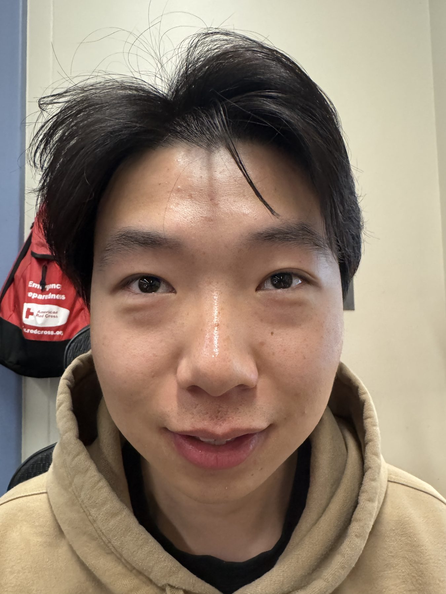
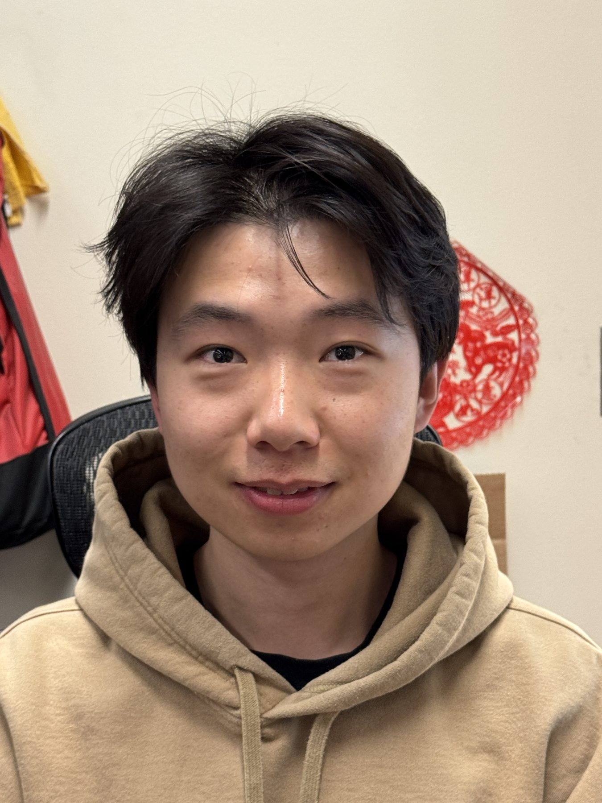
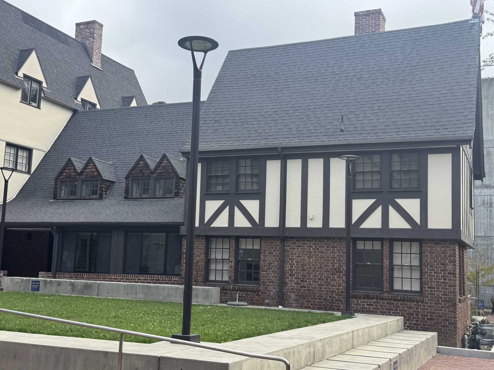
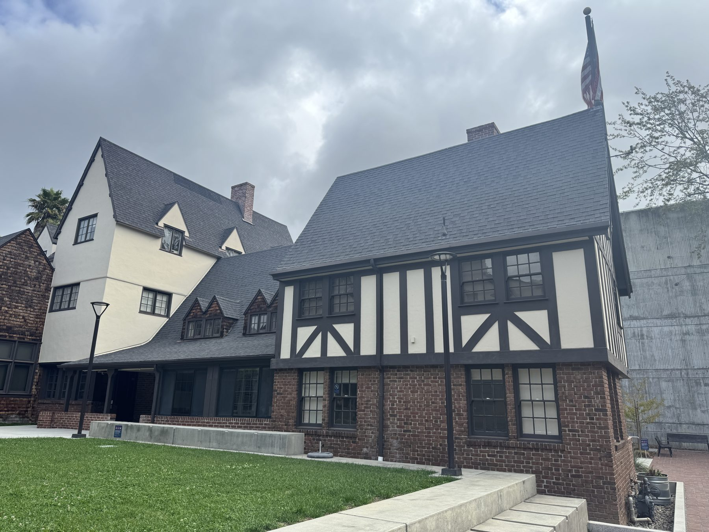
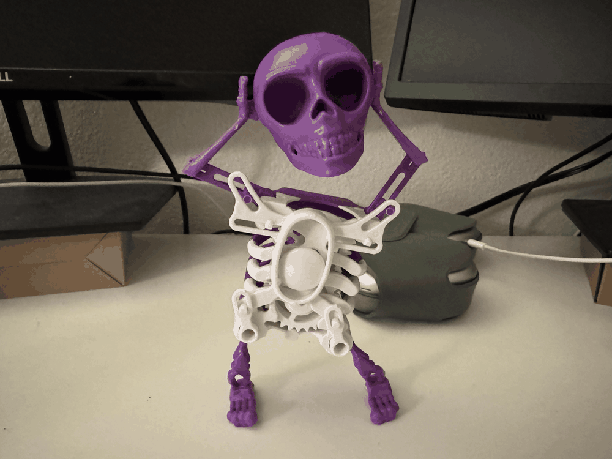

CS 180 · Project 0
Becoming Friends with Your Camera
Three small photo experiments about what changes when I move the camera instead of the zoom: face distortion, flattened buildings, and a dolly zoom.
Task 1Selfie: the wrong way and the right way
I think the second picture looks better because I'm standing farther away. When the camera is really close to someone's face, the parts closest to the lens, like the nose, look bigger compared to the ears and the rest of the face. This causes that weird distortion, which looks funny.
When I step back, the distances from the camera to different parts of the face become more similar, so the face looks more natural and proportional. Zooming in just makes the face fill the frame again, and the increased distance fixes the distortion.
Thanks to PhD candidate Jeff for volunteering to be my model, so I didn’t have to take selfies.


Task 2Architectural perspective compression
I think the first picture looks more flat because I'm standing farther away from the building and zooming in. From that distance, the front and back parts of the scene don't look as far apart, so everything seems more compressed.
When I walk closer and take the picture without zoom, the differences in distance are easier to see. The parts closer to me look bigger, while the parts farther away look smaller, which makes the scene feel like it has more depth.


Task 3The dolly zoom
For this one I used a small 3D-printed skeleton sitting on my desk. I took 11 photos, and between each one I stepped back a little and zoomed in a little, trying to keep the skeleton about the same size in the frame.
Since the skeleton stays the same size but the perspective keeps changing, the background is what moves: the monitor and headphones behind it grow and slide around while the skeleton barely changes at all.
